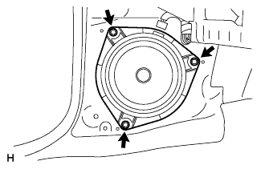

|
手で上方に引いて車両後方からツメのかん合をはずし、フロントドアスカツフプレートLHを取りはずす。
フロントスピーカASSY No.1(LH) 取り外し |
| 1. フロントドアスカッフ プレート LH取りはずし |
|
手で上方に引いて車両後方からツメのかん合をはずし、フロントドアスカツフプレートLHを取りはずす。
| 2. リヤドア オープニングトリム ウェザストリップ LH切り離し |
カウル サイドトリムボード LHを取り外せるまでの範囲を切り離す。
| 3. インストルメントパネルアンダ カバーSUB-ASSY NO.1取りはずし |
 |
クリップ<a>２個をはずし、インストルメントパネル アンダカバー No.1上部を手前に引いてツメ9箇所のかん合をはずし、インストルメントパネルアンダカバーNo.1を取りはずす。
| 4. カウルサイドトリム ボード LH取りはずし |
 |
樹脂クリップをはずす。
ツメ２箇所、クリップ１箇所のかん合をはずし、カウル サイドトリムボード LHを取りはずす。
| 5. フロントスピーカASSY No.1(LH)取りはずし |
|  |
コネクターを切り離す。
ボルト3本をはずし、フロントスピーカーASSY No.1 LHを取りはずす。